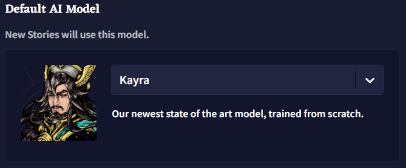
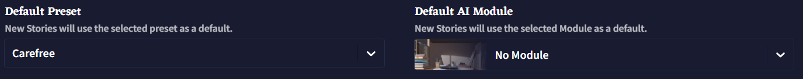
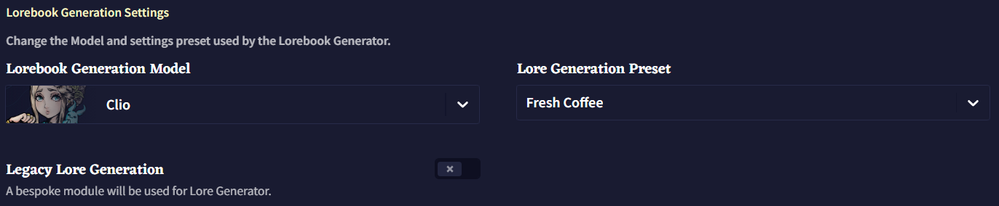

Default
Last contents updated 9/24/2024
새 이야기를 시작할 때, 현재 페이지의 설정이 적용됩니다. Defaults 탭에서 사용자는 기본 모델과 프리셋, 모듈, 선호하는 Lorebook 설정을 할 수 있습니다.
Default AI Model

기본값으로 설정하는 모델에 따라, 아래 드롭다운 메뉴에서 다른 프리셋과 모듈을 사용할 수 있습니다. 새로운 모델이 나왔을 때, 설정한 기본 모델은 자동으로 변경되지 않으니 반드시 변경하세요!

Default Preset
각 모델은 기본 프리셋 세트가 같이 제공되지만, 직접 저장하거나 임포트인 자신만의 프리셋을 기본값으로 설정하여 새 이야기를 시작할 때 사용할 수 있습니다.
Default AI Module
가장 좋아하는 모듈이 있나요? 텍스트 어드벤쳐만 플레이하나요? Default AI Module 드롭다운 메뉴를 사용하여 좋아하는 모듈이 로드된 채로 모든 이야기를 시작하세요. 오래된 모델은 커스텀 모듈 훈련도 지원하며 여기에서 설정도 할 수 있습니다.
Lorebook Generation Settings

Lorebook Generation Model
로어북 생성에 사용되는 모델을 변경할 수 있습니다. 예전 모델의 스타일을 선호하거나 단순히 테스트해보고 싶을 경우 Lorebook Generation Model 드롭다운 메뉴를 사용하여 변경할 수 있습니다.
Lore Generation Preset
프리셋은 로어북 생성에서 다르게 작동할 수 있으므로 자신에게 가장 적합한 것을 선택하세요. 커스텀 프리셋도 이 드롭다운 메뉴에서 지원됩니다.
Legacy Lore Generation
Legacy Lore Generation 토글을 사용하면 Lorebook 로어 생성 섹션의 레거시 모듈을 활성화합니다.
레거시 모듈은 켜졌을 때의 면책조항에 명시된대로 일관성이 떨어지는 퓨샷 프롬프트 기반 생성기 입니다.